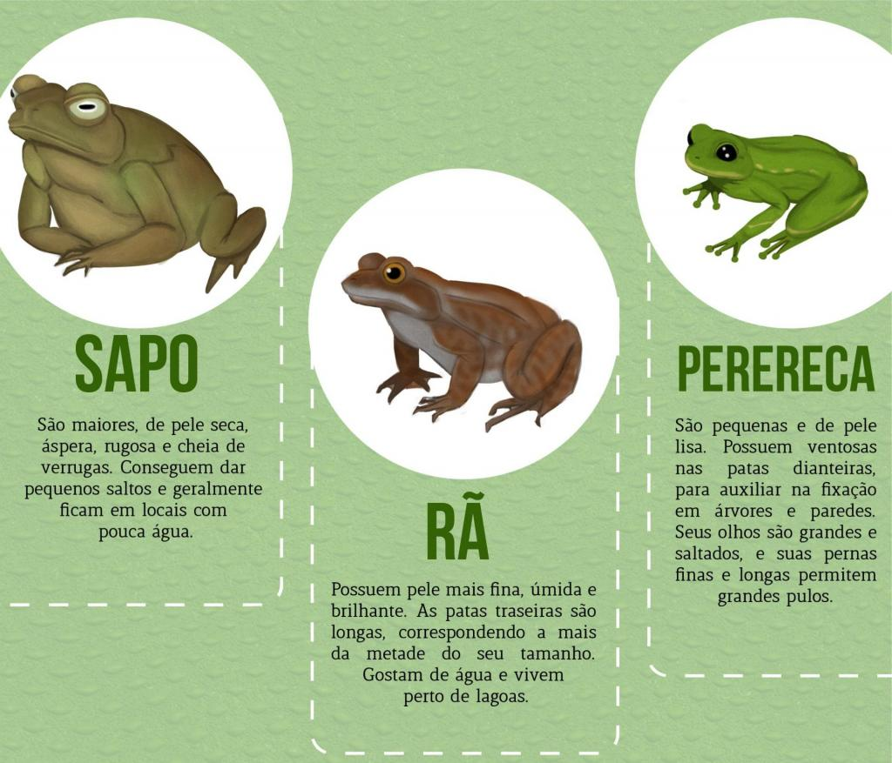
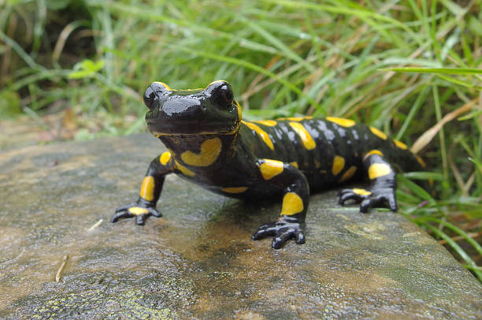
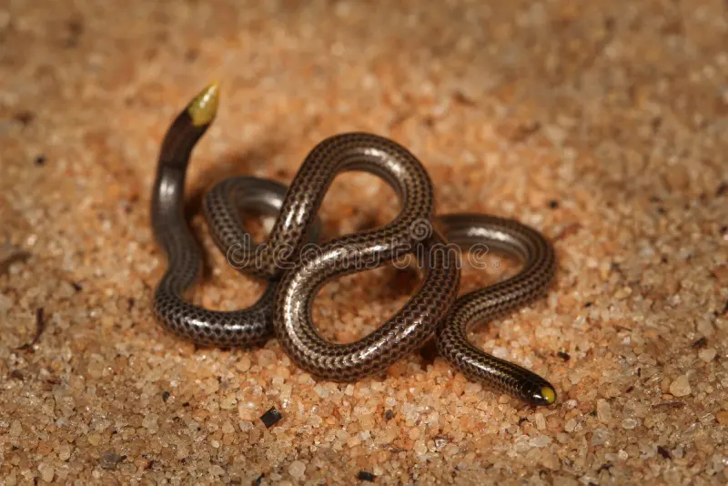

Segredos Escamados
Uma Jornada pelos Reinos dos Anfíbios

Anfíbio: Imagine um animal que vive em dois mundos: na água como um peixinho e na terra como um sapo! Incrível, né? É isso que os anfíbios fazem!
Características gerais dos anfíbios
Esses bichinhos incríveis são como super-heróis com poderes especiais:
Temperatura Ninja: Eles não controlam o calor do corpo sozinhos, precisam da ajuda do sol para se aquecer e da sombra para se refrescar.Respiração Pele Ninja: Trocam gases pela pele, como se respirassem com todo o corpo! Isso é importante para viver na água e na terra.
Ciclo de Vida Ninja: Começam a vida na água como girinos, com cauda e tudo! Depois, mudam de forma e se tornam anfíbios adultos, prontos para explorar a terra.
Pele Super-Úmida: Sua pele precisa estar sempre úmida para respirar. Por isso, preferem lugares molhados como florestas e matas. Mas alguns ninjas da secura se escondem em tocas e folhas para manter a pele úmida.
Glândulas Mágicas: Possuem glândulas especiais que liberam um líquido mágico que deixa a pele úmida, perfeita para a respiração.
Os anfíbios são animais muito importantes para o nosso planeta. Eles comem muitos insetos, ajudando a controlar suas populações. Além disso, são parte importante da cadeia alimentar, servindo de alimento para outros animais.
Então, da próxima vez que você vir um sapo, uma rã ou uma salamandra, lembre-se: esses são ninjas da natureza que vivem uma aventura dupla em dois mundos!
Tipos de anfíbios
Existem três grupos principais de anfíbios:
Sapos e rãs: saltam por aí com suas patas longas e poderosas.
Salamandras e tritões: alguns vivem na água, outros na terra, e alguns até escalam árvores!
Cobras-cegas: vivem no subsolo e têm um corpo comprido e sem patas.
 Onde vivem: os anfíbios adoram lugares úmidos, como lagos, rios, pântanos e florestas. Mas
alguns podem viver até em desertos!
Alimentação: a maioria dos anfíbios é carnívora, adorando insetos, minhocas e outros bichinhos
como lanche.
Ameaças: infelizmente, muitos anfíbios estão em perigo de extinção devido à perda de habitat,
poluição e doenças. Podemos ajudar protegendo o meio ambiente e aprendendo mais sobre esses animais incríveis!
Relembrando...
Observe os anfíbios em seu habitat natural.
Aprenda sobre a importância dos anfíbios para o meio ambiente.